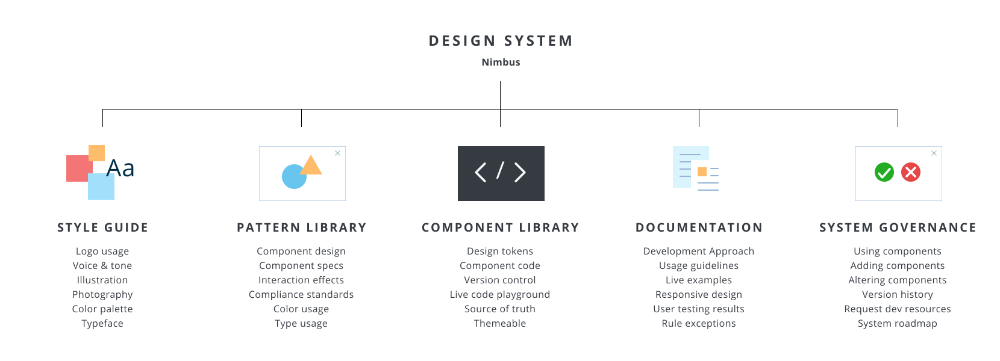
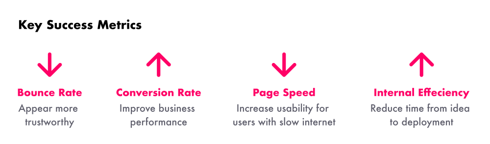
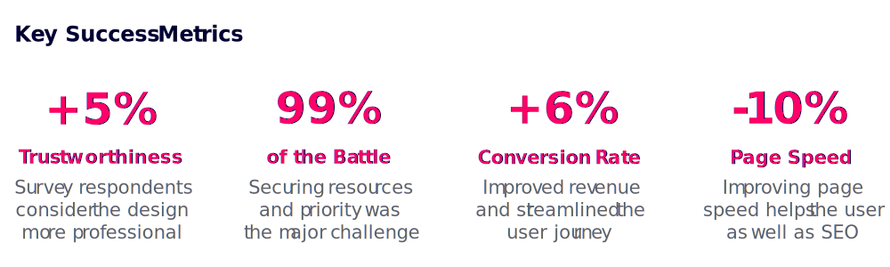

Design System for Capterra
I created and tested a design system for Capterra. The system includes themeable design tokens, fully responsive components, and animated interactions.
TLDR: Created and deployed a design system for Capterra with 40+ fully responsive, accessible, and user-friendly components.
- Role: Project Lead & Lead UI Designer
- Software Used: Figma, Illustrator, UserTesting, Hotjar, Optimize
- +6% CVR on Capterra's main directory page
- +5% in perceived "trustworthiness"
- 10% improvement in page speed (first contentful paint)

The Problem
Capterra's UI had no source of truth: the website was frankensteined together over many years by many different stakeholders. This created an inconsistent user experience and an inefficient development process.

During the 20 years since Capterra’s founding, countless changes have been made to the buyer facing product. From new features, to bug fixes, to rebrands, the website has passed through dozens of different aesthetic styles and voices. Capterra relied on style guides and institutional knowledge to guide design decisions. However, this has created a number of problems:
1
Inconsistent aesthetics and functionality of identical UI elements.
2
Inefficient spec guide creation and handoff.
3
Design debt spread across multiple pages making it difficult to prioritize.
4
Inability to make feature releases and brand updates as quickly as competitors.
5
A lack of unified design principles and guidelines.
The Process
Capterra's UI had no source of truth: the website was frankensteined together over many years by many different stakeholders. This created an inconsistent user experience and an inefficient development process.
During the 20 years since Capterra’s founding, countless changes have been made to the buyer facing product. From new features, to bug fixes, to rebrands, the website has passed through dozens of different aesthetic styles and voices. With so many hands subtly molding the product over such a long period of time, design drift (and debt) inevitably started to pile up.
In recent years, this debt became hard to ignore. Competitors started unveiling sleak rebrands and speedy feature releases while our development teams were stuck wading through dense and confusing frontend spec documents. Our UI had drifted drastically throughout the site resulting in the same exact component appearing differently every time a user encountered it. Our design team had no unified principles guiding our choices. The branding materials didn’t speak the same language as our website. It became clear that Capterra needed a design system. And fast.
Evangelizing & Education
Creating a design system requires an enormous amount of resources; securing buy-in from leadership became a major challenge of this project. Timely communication and clear success metrics were key to overcoming this hurdle.

After my initial research into design systems, I gathered expectations from stakeholders. Product wanted deliverables faster when they asked for design and frontend work. Tech wanted to implement a new stack using ElasticSearch, React, Lambchop, and more. Design wanted to stop spending hours creating spec docs of the same components over and over again. Branding, SEO, Marketing, Content, and more eventually became informed stakeholders in this project.
However, while leadership liked the idea, they didn't want to dedicate the development resources necessary to make it happen. For months my team and I presented our case by showing how the new design improved OKR metrics, did a real-time demo of the laborious design/dev handoff experience versus the new and improved process, and showed off hypothetical redesigns of our major templates. Once we were able to clearly communicate the benefits of a design system from a business and UX perspective, we were able to secure the resources necessary to get the project off the ground.
Prototyping & User Testing
It was vital that none of the changes we introduced would negatively impact conversions, or revenue for Capterra. We tested the new designs with both unmoderated usability testing and AB testing in a live traffic environment.

With resources secured, it was time to start testing the redesign. For each of the major components we built, we started by researching best practices, building prototypes, and testing them with real users to make sure they would find our site usable and delightful. In some cases, like with our button style, we presented the new design to live traffic in an AB test to verify that conversion rates wouldn’t be affected. In other cases, we presented a variety of designs to testers through unmoderated testing platforms to identify the most usable version of each component.
This process helped not only to convince leadership of the potential revenue gains these design changes could have on our site, but also to consistently remind the design team to create components that are best for the user, and not just aesthetically pleasing.
The Solution
A centralized, themeable, responsive, and accessible design system owned and maintained by a cross-functional tiger team. Deliverables include: pattern library, component library, token library, and documentation.
1
Pattern Library
With resources secured, it was time to start testing the redesign. For each of the major components we built, we started by researching best practices, building prototypes, and testing them with real users to make sure they would find our site usable and delightful. In some cases, like with our button style, we presented the new design to live traffic in an AB test to verify that conversion rates wouldn’t be.
2
Token Library
With resources secured, it was time to start testing the redesign. For each of the major components we built, we started by researching best practices, building prototypes, and testing them with real users to make sure they would find our site usable and delightful. In some cases, like with our button style, we presented the new design to live traffic in an AB test to verify that conversion rates wouldn’t be.
3
Component Library
With resources secured, it was time to start testing the redesign. For each of the major components we built, we started by researching best practices, building prototypes, and testing them with real users to make sure they would find our site usable and delightful. In some cases, like with our button style, we presented the new design to live traffic in an AB test to verify that conversion rates wouldn’t be.
4
Documentation
With resources secured, it was time to start testing the redesign. For each of the major components we built, we started by researching best practices, building prototypes, and testing them with real users to make sure they would find our site usable and delightful. In some cases, like with our button style, we presented the new design to live traffic in an AB test to verify that conversion rates wouldn’t be.
Core Tenets & Design Philosophy
It was vital that none of the changes we introduced would negatively impact conversions, or revenue for Capterra. We tested the new designs with both unmoderated usability testing and AB testing in a live traffic environment.
Core Tenants
Modular
Components should always be designed with modularity in mind. This means that no component should be so specific that it is only used in one, or two contexts. This also means that no component can form layout on its own. All components should be combined to form template design.
Accessible
Every aspect of the system must be accessible to all users. Specifically, each component must pass AA color contrast criterion, be keyboard navigable, and be screen reader compatible.
Comprehensive
This system should be thoroughly documented so that designers can quickly and consistently use components correctly. Every component has a comprehensive explanation of governance, use cases, interaction states, and more.
Flexible
Because we design components to be modular, they need to be sufficiently flexible to suit a multitude of use cases. Creating components and design tokens with variants is one way to keep the system organized, and modular.
Design Philosophy
Vibrant
We developed a palette of bright, fresh colors to grab user attention and help them focus on our content and tools. These vibrant colors establish visual interest without overwhelming the layout with unnecessary, or distracting imagery.
Approachable
There is an emphasis on organic shapes throughout Nimbus; rounded components like buttons and iconography create an inviting, friendly aesthetic. We focus on accessibility so that all software buyers feel welcome.
Dimensional
Nimbus is optimized to encourage user interaction through mimicking real world experiences. Through the use of drop shadows, added background contrast, and interaction effects, we help users easily perform complicated digital tasks.
Authoritative
Our bold and angular typography portrays a sense of confidence. With clearly defined hierarchy and easy to read font styles, we establish Capterra as a dependable and professional source of information.
Key Learnings & Next Steps
It was vital that none of the changes we introduced would negatively impact conversions, or revenue for Capterra. We tested the new designs with both unmoderated usability testing and AB testing in a live traffic environment.

During the 20 years since Capterra’s founding, countless changes have been made to the buyer facing product. From new features, to bug fixes, to rebrands, the website has passed through dozens of different aesthetic styles and voices. Capterra relied on style guides and institutional knowledge to guide design decisions. However, this has created a number of problems:
1
Inconsistent aesthetics and functionality of identical UI elements.
2
Inefficient spec guide creation and handoff.
3
Design debt spread across multiple pages making it difficult to prioritize.
4
Inability to make feature releases and brand updates as quickly as competitors.
5
A lack of unified design principles and guidelines.
Next Case Study 
Mobile Comparison Table
Hackathon: Podcast App
Developed with Love by Amelia Peacock 2020